Experiência · CCBB Brasília, 2015
Tumulto III
A antologia da obra de Wagner Barja (1985–2015), publicada por ocasião da exposição no Centro Cultural Banco do Brasil. Aqui o livro vira site: cada obra tem seu espaço, com textos e imagens em alta resolução.
A exposição
O Ministério da Cultura e o Banco do Brasil apresentam Experiência Tumulto III, um panorama da produção artística de Wagner Barja, artista radicado na capital federal. A mostra revela uma obra “altamente coesa” que, constituída ao longo de três décadas, sempre foi marcada pelo caráter experimental, irreverente e reflexivo, pelo trânsito por diversas mídias e linguagens artísticas, pelo cruzamento de diferentes domínios, saberes e sensibilidades.
A exposição conta com trinta obras que evidenciam as diversas linguagens com as quais o artista trabalha — poesia visual, vídeos e fotografias, esculturas e instalações, performances e intervenções urbanas — e com uma instalação inédita, “Jonas”.
Centro Cultural Banco do Brasil, texto institucional do catálogo (2015).
Experiência Tumulto III
“Vemos por enigmas, ouvimos por dissonâncias. É esse lugar fora do lugar, que Barja não cessa de abrir. Por isso, suspeito que essa escrita-arte ao lado é, antes de tudo, ‘artesemnome’.”
Marisa Flórido César, curadora — texto de abertura do catálogo. Barja é um subversor da codificação da vida e da arte: apropria-se de ícones e mitos, textos e objetos, conceitos e saberes, e os associa de modo improvável, por vezes risível, desvelando as arbitrariedades dos signos e dos discursos. João Batista encontra-se com outro João, o Beuys; o sol/olho de Goethe transforma-se na quinta nota da escala; o olho converte-se no olho-ânus de Bataille.
Índice de obras
Todos os registros do catálogo — da Antologia da obra (1985–2015) às vídeo intervenções e à instalação Jonas. Nenhuma obra ficou de fora.
O Profeta e a Jaguatirica
Instalação sonora com profeta de Aleijadinho, som, penas de galinha-d'Angola e sombra de jaguatirica.
2011O Cru e o Cozido
Animação de imagens da Expedição de Claude Lévi-Strauss ao Brasil em 1936.
1985Neoconcreto
Ver imagens e textos da obra no catálogo.
1986Pega Monet, Pega Manet
Ver imagens e textos da obra no catálogo.
1985Deitado Eternamente
Ver imagens e textos da obra no catálogo.
1985O Casamento de Márcia X com Marcel Duchamp
Ver imagens e textos da obra no catálogo.
1990Queops Brasilis
Ver imagens e textos da obra no catálogo.
1993São João Beuys
Ver imagens e textos da obra no catálogo.
1999Agulha no Palheiro
Ver imagens e textos da obra no catálogo.
1997O Sol de Goethe
Ver imagens e textos da obra no catálogo.
1999TV Anal
Ver imagens e textos da obra no catálogo.
1997Cultura x Natureza = Barbárie
Ver imagens e textos da obra no catálogo.
1990H2O Monet
Ver imagens e textos da obra no catálogo.
Poema a Vista
Ver imagens e textos da obra no catálogo.
1993Ser ou Não Ser ao Gullar
Ver imagens e textos da obra no catálogo.
1984–2013Armadilhas Semânticas
Ver imagens e textos da obra no catálogo.
Vídeo · 5′A Vitória do Gallo
Vídeo-registro realizado em Cachoeira do Arari, Ilha de Marajó.
Vídeo · 3′Despacho na Duna
Vídeo-registro da intervenção urbana, crítica ao circuito de arte.
O Profeta e a Jaguatirica
1985–86 — do catálogo Experiência Tumulto III (CCBB, 2015)
THE PROPHET AND THE OCELOT - In “The Proph- et and the Ocelot” (1985-86), the Baroque is con- templated as a contemporary style peculiar to the modernity allied to Brazilian nature, creating a space from which one can question the value of the sign - visual and linguistic - of the artist’s own name. It envelops with its sound the figure of the prophet Oseas - his name means salvation - executed by the sculptor Aleijadinho, whose shadow delineates the squashed shadow of an Ocelot. The whole thing covered by a kind of veil with wings of guinea fowl [a key animal in the rites and ceremonies of Candomblé]. A work that adopts - and not by chance - the format of an au- thentic altarpiece as a sounding board to inter- pret signs, the traces that guide a tradition. Barja remains attentive to the possibilities of this place where the past moves towards a new thought, a new form; not by sublimation, but by shedding light to a place and the word kept in it, where Eu- ropean culture, Brazilian nature and African sap fuse themselves.
Mercedes Replinger González - extract from Instalações Barja - 2005 / Baroque Stages. Jaguatirica” (1985-86), o Barroco é contemplado como um estilo contemporâneo peculiar da mo- dernidade em aliança com a natureza brasileira, forjando o lugar de onde se pode interrogar o valor do signo, visual e lingüístico do nome pró- prio do artista. Envolve com seus sons a figura do profeta Oséias que quer dizer salvação reali- zada pelo escultor Aleijadinho cuja sombra de- limita o contorno, a sombra estatelada de uma Jaguatirica. Todo o conjunto coberto por penas de galinha d’Angola [animal chave nos ritos e cerimônias da prática do Candomblé] como um manto. Uma peça que, não por casualida- de, adota o formato de um autêntico retábulo como caixa de ressonância para interpretar os sinais, os indícios que orientam uma tradição. Barja permanece fiel à escuta desse lugar, des- se espaço onde o passado se converte em um novo pensamento, uma nova forma; não por sublimação, senão por iluminação de um lugar e da palavra que se guarda nele, onde se funde a cultura de origem européia, a natureza brasi- leira e a seiva africana. Mercedes Replinger González - extraído do livro Insta- lações Barja - 2005, texto “Cenografias Barrocas”.

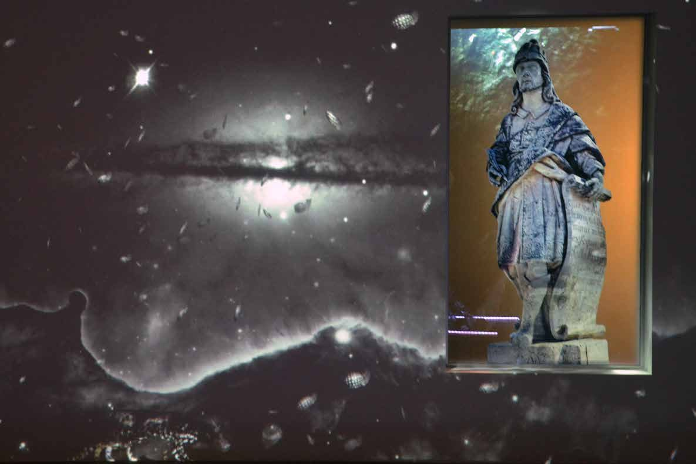

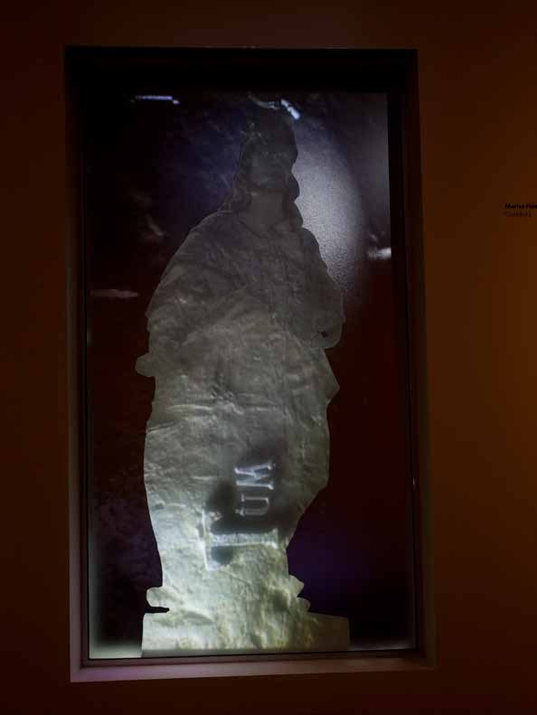
O Cru e o Cozido
2011 — do catálogo Experiência Tumulto III (CCBB, 2015)
2011 Detalhes da animação de imagens da Expedição de Claude Levì Strauss ao Brasil em 1936.


Neoconcreto
1985 — do catálogo Experiência Tumulto III (CCBB, 2015)


Pega Monet, Pega Manet
1986 — do catálogo Experiência Tumulto III (CCBB, 2015)
PEGA MONET PEGA MANET 1986


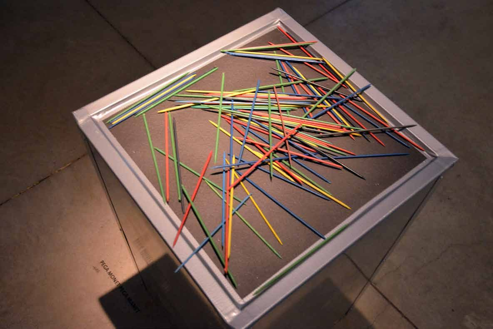
Deitado Eternamente
1985 — do catálogo Experiência Tumulto III (CCBB, 2015)


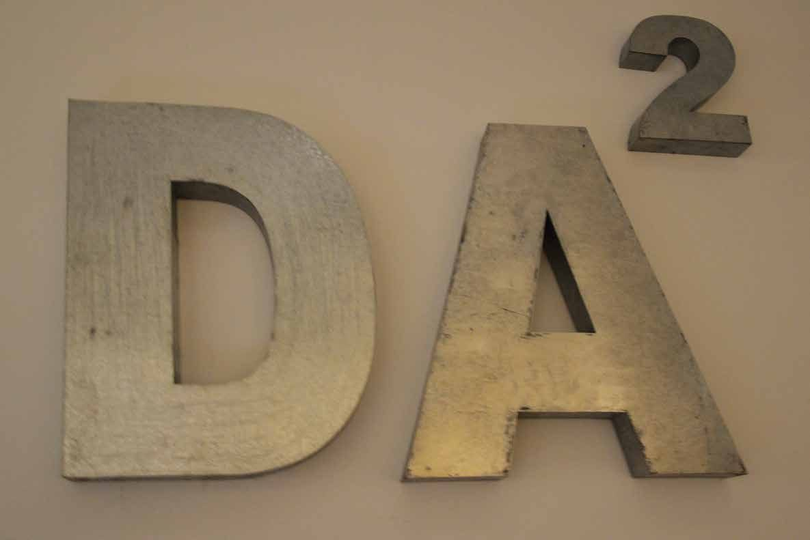
O Casamento de Márcia X com Marcel Duchamp
1985 — do catálogo Experiência Tumulto III (CCBB, 2015)
O CASAMENTO DE MARCIA X COM MAR- CEL DUCHAMP 1985
O CASAMENTO DE MARCIA X COM MARCEL DUCHAMP O ângulo adequado para se poetizar o mundo: reduzindo “um problema intrincado a pontos simples e claros...”. Di- versão e complexidade, como deve ser a vida. Marília Panitz - extraído do livro Ins- talações Barja - 2005, texto “ao que importa uma resposta” . THE MARRIAGE OF MARCIA X WITH MARCEL DUCHAMP The proper angle for poeticizing the world: reducing “a complex prob- lem to simple, clear points…”. Complexity and fun, just as life should be. Marília Panitz - extract from Insta- lações Barja - 2005 / “The relevance of an answer”.


Queops Brasilis
1990 — do catálogo Experiência Tumulto III (CCBB, 2015)

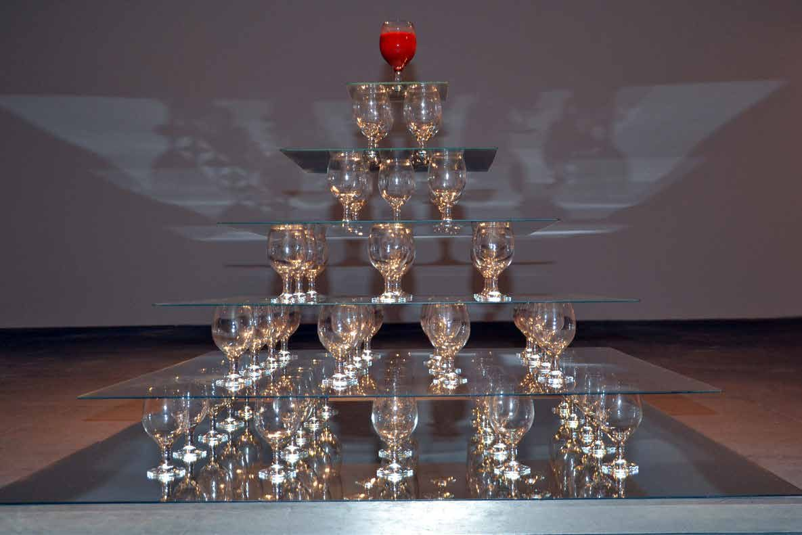

São João Beuys
1993 — do catálogo Experiência Tumulto III (CCBB, 2015)


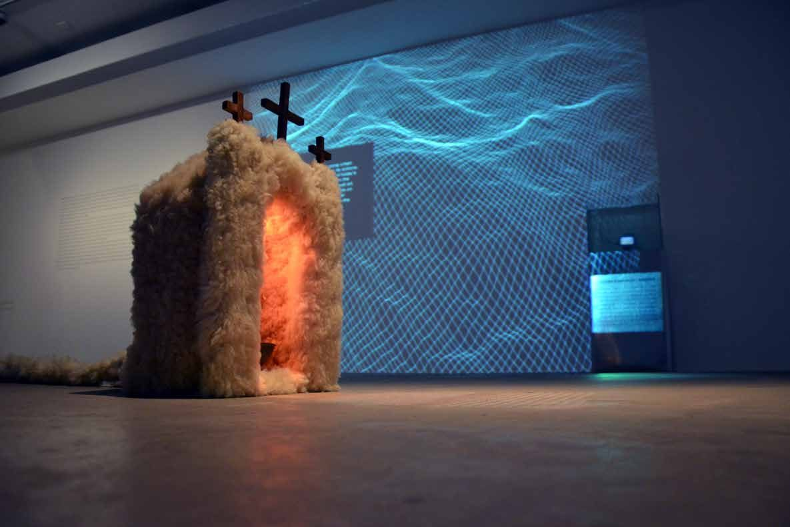
Agulha no Palheiro
1999 — do catálogo Experiência Tumulto III (CCBB, 2015)
para nivelar visibilidades 1999 nivelar visibilidades - Presença e ausência, distanciamento e proximidade. Por um instante que pode ser uma eternidade, visão e cegueira ficam iguala- dos ante a dificuldade de se encontrar algo olhando. Mercedes Replinger González - ex- traído do livro Instalações Barja - 2005. NEEDLE IN THE HAYSTACK: Equalizing visibilities - Pres- ence and absence, distance and proximity. For an instant that may feel like eternity, blindness and sight attain equality before the difficulty of finding something with the sight. Mercedes Replinger González - ex- tract from Instalações Barja - 2005.


O Sol de Goethe
1997 — do catálogo Experiência Tumulto III (CCBB, 2015)


TV Anal
1999 — do catálogo Experiência Tumulto III (CCBB, 2015)
tência no ser humano de um olho específico para contemplar o sol: o olho pineal, glândula situada abaixo da caixa craniana que, diferen- temente dos olhos surpreendidos na horizon- talidade do devir cotidiano, do que se oferece ao olhar, permite-nos levantar e ver o sol cara a cara, como a águia dos antigos. O olho pine- al é, para Bataille, a confirmação do afã do ser humano de elevar-se acima de sua condição terrena. Esse incontido desejo de ver o sol cara a cara marcaria, segundo o autor, a evolução do homem de sua posição inclinada, quadrúpede, presa ao solo de vista horizontal, até a ereta ânsia de contemplar o sol diretamente e que o afastaria definitivamente de sua origem pri- meira como animal. Assim, ébrio de sol, pode entregar-se por completo à angustia e à náusea que o espaço sem limites, o vazio absoluto pro- duz . O olho pineal, órgão que permite ao ho- mem identificar-se diretamente com aquilo que contempla, converte o mesmo em sol, ou seja, tornar-se, paradoxalmente, um sol cego ou sol cegador. (...) Bataille, que encontrava correspondências paró- dicas entre todas as coisas do universo, via esse olho pineal em estreita relação com o ânus. “O Ânus So- lar” se chama precisamente um texto de 1927. Mercedez Replinger/Marisa Flórido César 1997 ANAL TV - Georges Bataille (...) imagined the existence in the human being of an eye just to contemplate the sun: the pineal eye, a gland situated under the skull that, unlike the dazed eyes of everyday horizontality, of what is of- fered to be seen, allows us to raise-up and see the sun face to face, like the eagle of the An- cient. The pineal eye is, for Bataille, the confir- mation of the human being’s eagerness of rais- ing themselves from their earthly condition. This unrestrained desire to see the sun face to face would define, according to the author, Men’s evolution from his inclined position, quadruped, tied to the horizontal ground view, until the erect craving of contemplating the sun directly would definitely push him away from his first origins as an animal. Thus, drunk- en with sun, he can give himself completely to anguish and nausea that the limitless space, that absolute emptiness produces. The pineal eye, an organ that allows Men to identify him- self directly to that which he contemplates, converts even the sun, that is, it becomes, para- doxically, a blind sun or a blinding sun. (...) Bataille, who found parody correspondences between all things in the universe, saw this pi- neal eye in a direct relation to the anus. “The So- lar Anus” was precisely the name of a 1927 text: “the eye, on top of the cranium, is represented as a terrible erupting volcano, comic and confused, associated to the rear end and its excretions”. Mercedez Replinger /Marisa Florido César “o olho, na parte superior do crânio, é representado como um horrível vulcão em erupção, em um caráter confuso e cômico, associado ao traseiro e suas excreções”.


Cultura x Natureza = Barbárie
1997 — do catálogo Experiência Tumulto III (CCBB, 2015)

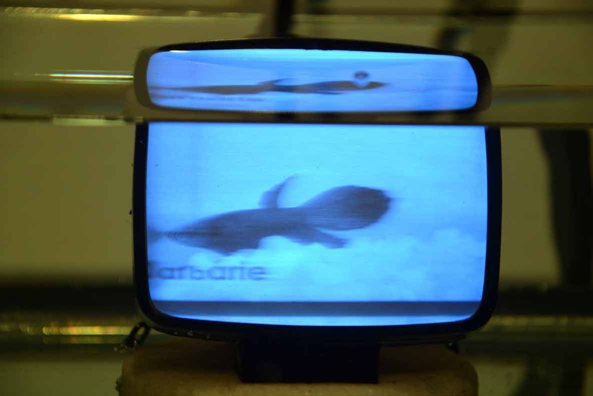

H2O Monet
1990 — do catálogo Experiência Tumulto III (CCBB, 2015)

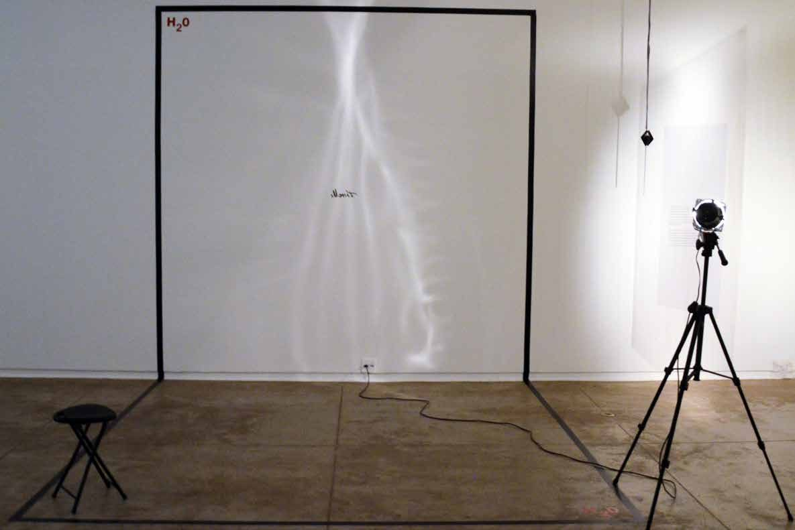

Poema a Vista
— do catálogo Experiência Tumulto III (CCBB, 2015)


Ser ou Não Ser ao Gullar
1993 — do catálogo Experiência Tumulto III (CCBB, 2015)
1993 DA2
Um Não que é parte de um jogo ambivalente com a pre- sença simultânea de uma afirmação e uma negação, sem que delas possa surgir uma superação. O possível se faz realidade, no sentido que o enunciava Bergson, onde o possível não é um fantasma que espera seu momento para assumir uma forma real, concreta. Ao contrário, o possí- vel é a realidade. Mercedez Replinger ,do livro Ins- talações Barja - 2005 do texto “A linguagem do olhar”. TO BE OR NOT TO BE TO GULLAR* A “no” that is part of an am- bivalent game in which af- firmation and negation exist side by side, with no possibility of a victory for either. Possi- ble becomes real, in the sense that Bergson meant when he said the possible is not a ghost waiting to incarnate and take a concrete form. On the con- trary, the possible already is reality. *Ferreira Gullar is a Brazilian poet and art critic [Translator’s note]
Mercedez Replinger , extract from Instalações Barja - 2005 / “The lan- guage of seeing”/MARISA FLORIDO .


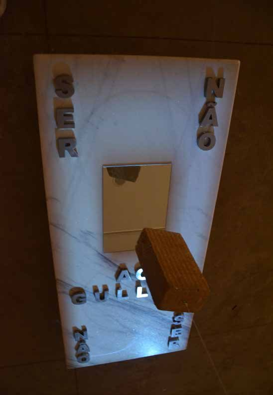
Armadilhas Semânticas
1984–2013 — do catálogo Experiência Tumulto III (CCBB, 2015)
1984-2013 AKD mico POLE mico POLISSE mico EPISTE mico END mico EPID mico PAND mico Cultura Natureza ENTRE A CADEIA ALIMENTAR, O CÓDIGO LINGUÍSTICO E O CÓDIGO FLORESTAL Com os pressupostos da efemeridade e da invisibilidade, essa ação conjunta de deglutição da língua portuguesa empreendida pelos micos (na qualidade de animais comedores de banana e de sufixos, do ponto de vista da morfo- logia linguística) provocada pela armadilha semântica construída por Barja, o que nos é dado a ver é o registro em tempo real e com documentação a posteriori, capturado por câmeras de segurança, da composição das palavras e seu posterior desaparecimento com a intervenção de seus sufixos/símios. Volto então aos fios/linhas/trilhas da Rua Araucária. Penso em escritura e em inscrições, tantas vezes imaginadas pelo habitante da cidade, quando confrontado com um céu recoberto de redes elétricas. Penso na separação e justa- posição entre natureza e cultura que a obra provoca. As duas primeiras equações poéticas (as mais antigas) trazem em si o signo do discurso, a relação direta com as letras articuladas em significados. Poderíamos falar inclusive de uma pendulação entre a tese (desenvolvida dentro da academia ) e a antítese ( gerada a partir da anterior e criando a polêmica). Sem dúvida, adjetivos que nomeiam características dentro do campo da linguagem verbal. Mas, a terceira pode ser um desvio de rota: endêmico associa-se à contaminação. Às questões biológicas e biogeográficas. No jogo


Vídeo intervenções
Registros em vídeo das intervenções e performances de Wagner Barja: A Vitória do Gallo (Cachoeira do Arari, Ilha de Marajó — Funarte) e Despacho na Duna, crítica ao circuito de arte.
A Vitória do Gallo
Vídeo · 5′ — do catálogo Experiência Tumulto III (CCBB, 2015)
Wagner Barja foi enviado pela Funarte (Fundação Nacional de Arte), para Nossa Senhora de Cachoeira de Arari, no Pará. A cidade abriga o Museu do Marajó, fundado em 1972 pelo padre italiano, Giovanni Gallo, importante líder local, junto com a população (em parte re- manescente de comunidades quilombolas). Em torno do museu do homem marajoara e de sua cosmologia cultural, a vida social seria estruturada. Após a morte do padre, a comunidade continuou a cres- cer imprensada entre o latifúndio e o rio, acirrando os conflitos entre o poder local (latifundiários) e as lideranças comunitárias. A proposta do artista consistiu então na realização por todos de um grande ato performático, uma celebração ocupando parte daquelas terras improdutivas com o universo cultural do homem marajoara: o boi-bumbá, a bandeira do Divino, entre outros. No dia do evento, Barja observou algo inusitado: cerca de 300 pessoas pe- las ruas, ocupadas com os seus afazeres do dia a dia, seguravam um papel enrolado na mão, uma folha em branco. Homens, mu- lheres, crianças, prostitutas marajoaras simulavam assim a posse de seu terreno. Ou seja, eles ficcionalizaram a reversão da própria situação precária, imaginaram e encenaram a mudança em suas vidas. Com a festa do boi, a festa da ocupação, fundaram o Bairro do Gallo. A prefeitura assumiu uma posição solidária, e eles lá ain- da permanecem. O artista foi ali um catalisador das potências adormecidas que precisavam apenas de um gatilho para emergir. Ficção não é a criação de um mundo ilusório se contrapondo ao real: são formas inauditas e ousadas de conexão entre um mundo referencial e outros mundos (inclusive potenciais) que atravessam ou orbitam à sua volta. Essa é sua potência cosmogônica, sua potência de imaginação, liberdade e criação. Arte não é o que toma para si a tarefa de ficcionalizar para o outro, é o que abre ao outro as con- dições e possibilidades para ele operar a própria ficção criadora. Ficção, phantasia para os gregos, designava “as artes do forjar”. São gestos de imaginar e forjar, gestos de uma reinvenção radical dos mundos. Marisa Flórido César, 2014 FICÇÕES CRIADORAS Marisa Flórido César

Despacho na Duna
Vídeo · 3′ — do catálogo Experiência Tumulto III (CCBB, 2015)


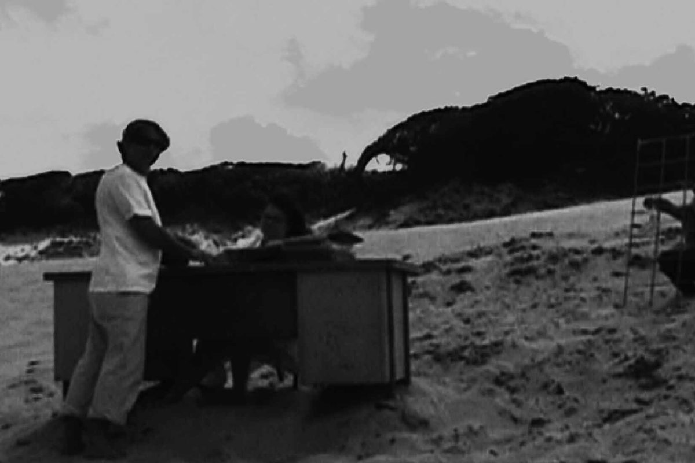
Jonas — instalação inédita
Jonas, o profeta desobediente, é engolido por uma baleia em alto mar e lá fica por três dias, em câmara escura. Barja, o artista tumultuador, devolve o visitante a esse ventre: águas projetadas, mônadas abertas, palavra e imagem em suspensão.
As páginas seguintes do catálogo documentam a instalação multimídia inédita criada para Experiência Tumulto III, com texto de Maria Thereza Azevedo (“Jonas: deslocamentos e repetições em instalação multimídia”) e de Antônio Miranda (“Verbivocovisualidade na instalação Jonas”).
Jonas em imagens

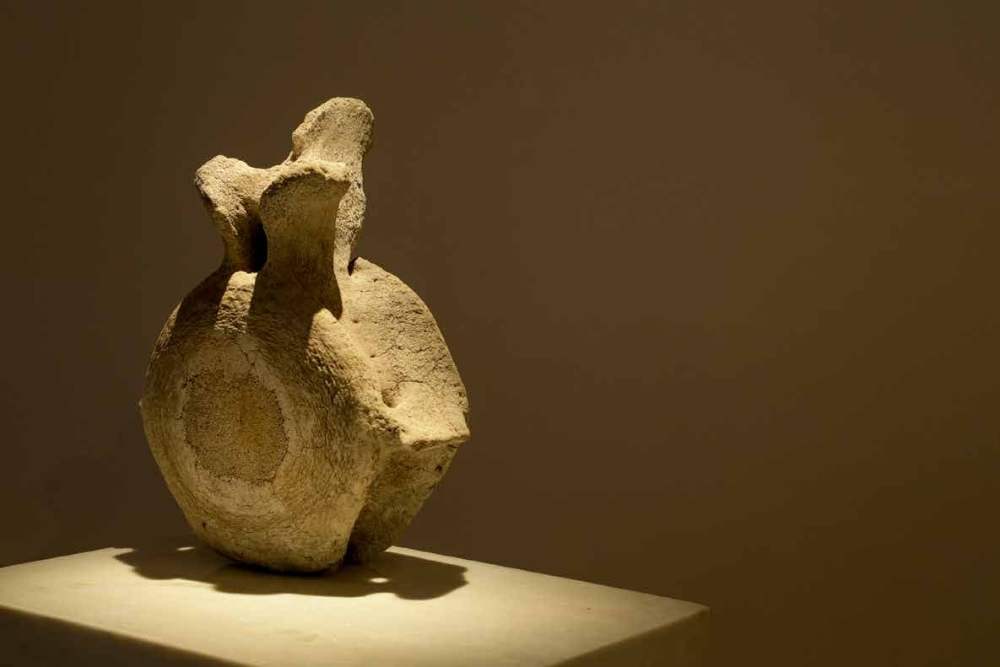


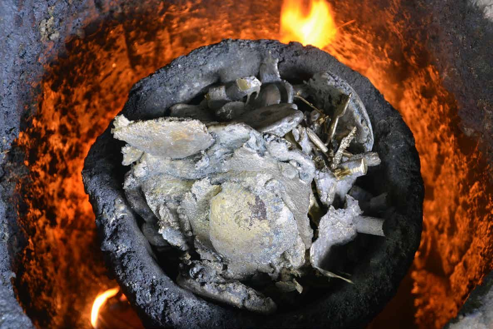


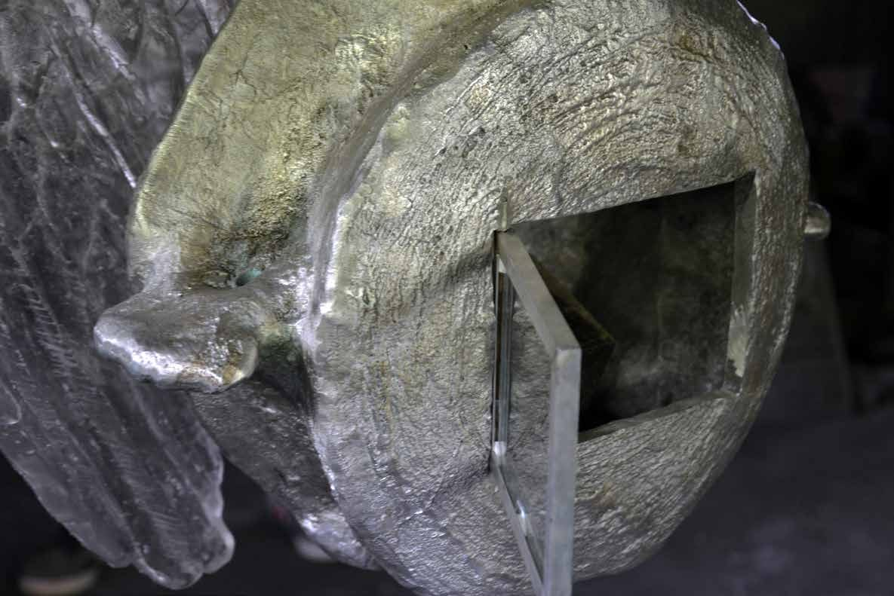

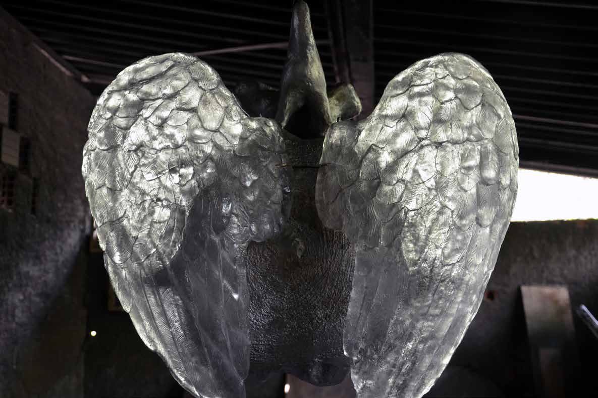

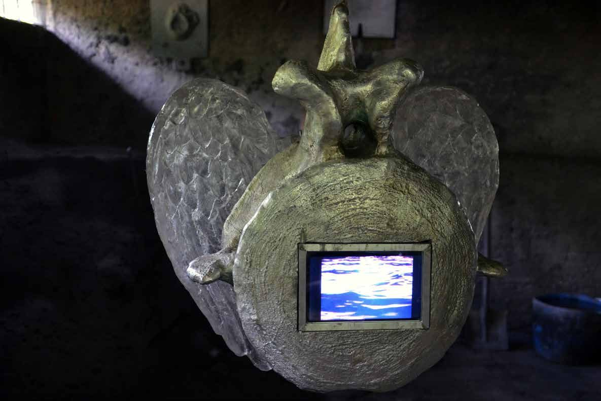

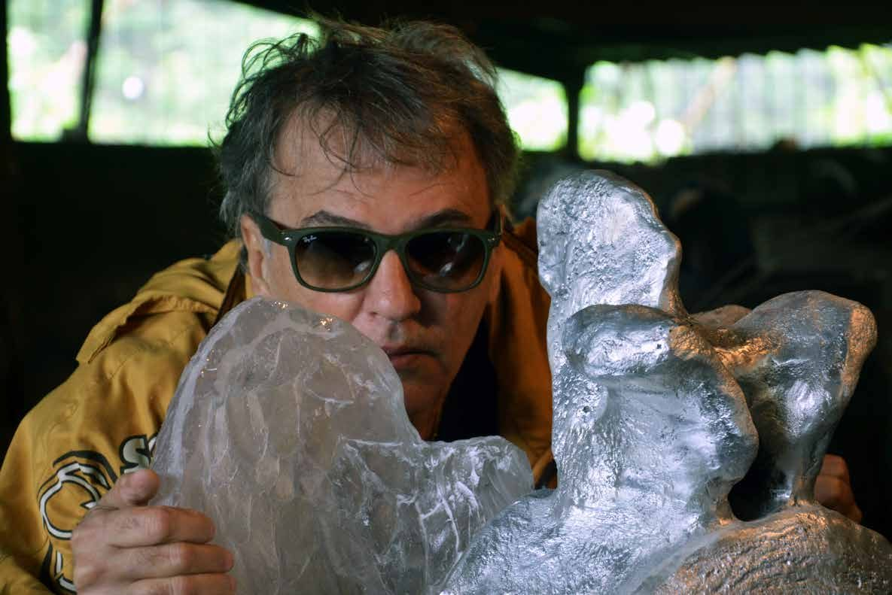


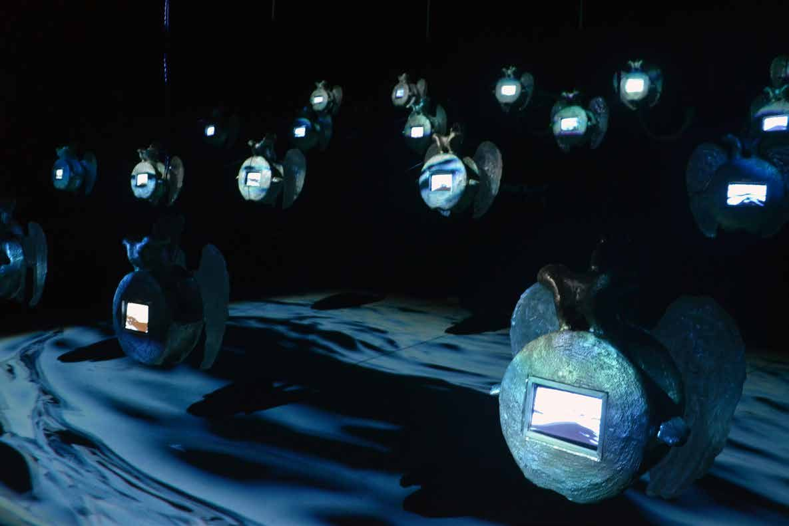